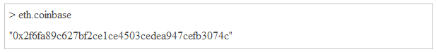

1. Introduction¶
Quorum is an Ethereum-based distributed ledger protocol that supports transaction and contract privacy. The primary features of Quorum are
- Transaction and contract privacy.
- Voting-based consensus mechanism.
- Network and peer permissions management.
- Higher performance.
Quorum includes the powerful feature of support for private and public transactions.
- Private Transactions: Transactions whose payloads are only visible to the network participants whose public keys are specified in the privateFor parameter of the transaction. privatefor can take multiple addresses in a comma-separated list.
- Public Transactions: Transactions whose payloads are visible to all participants of the same Quorum network. These are created as standard Ethereum transactions in the usual way.
2. Purpose of this Document¶
This document aims to provide a comprehensive QUORUM block-chain framework startup guide.
The document at a high level covers the following -
- How QUORUM is differentiated from the similar DL technologies.
- Brief understanding about the QUORUM transaction flow.
- How to setup Quorum and configure cluster
3. Quorum Architecture - Transaction processing flow¶
In this example, Party A and Party B are party to Transaction AB, whilst Party C is not.
Party A sends a Transaction to their Quorum Node, specifying the Transaction payload and setting privateFor to be the public keys for Parties A and B
Party A’s Quorum Node passes the Transaction on to its paired Transaction Manager, requesting for it to store the Transaction payload
Party A’s Transaction Manager makes a call to its associated Enclave to validate the sender and encrypt the payload
Party A’s Enclave checks the private key for Party A and, once validated, performs the Transaction conversion. This entails:
- generating a symmetric key and a random Nonce.
- encrypting the Transaction payload and Nonce with the symmetric key from i.
- calculating the SHA3-512 hash of the encrypted payload from ii.
- iterating through the list of Transaction recipients, in this case Parties A and B, and encrypting the symmetric key from i. with the recipient’s public key (PGP encryption)
- returning the encrypted payload from step ii., the hash from step iii. and the encrypted keys (for each recipient) from step iv. to the Transaction Manager
- Party A’s Transaction manager then stores the encrypted payload (encrypted with the symmetric key) and encrypted symmetric key using the hash as the index, and then securely transfers (via HTTPS) the hash, encrypted payload, and encrypted symmetric key that has been encrypted with Party B’s public key to Party B’s Transaction Manager. Party B’s Transaction Manager responds with an Ack/Nack response. Note that if Party A does not receive a response/receives a Nack from Party B then the Transaction will not be propagated to the network. It is a prerequisite for the recipients to store the communicated payload.
- Once the data transmission to Party B’s Transaction Manager has been successful, Party A’s Transaction Manager returns the hash to the Quorum Node which then replaces the Transaction’s original payload with that hash, and changes the transaction’s V value to 37 or 38, which will indicate to other nodes that this hash represents a private transaction with an associated encrypted payload as opposed to a public transaction with nonsensical bytecode.
- The Transaction is then propagated to the rest of the network using the standard Ethereum P2P Protocol.
- A block containing Transaction AB is created and distributed to each Party on the network.
- In processing the block, all Parties will attempt to process the Transaction. Each Quorum node will recognise a V value of 37
- or 38, identifying the Transaction as one whose payload requires decrypting, and make a call to their local Transaction Manager to determine if they hold the Transaction (using the hash as the index to look up).
- Since Party C does not hold the Transaction, it will receive a NotARecipient message and will skip the Transaction - it will not update its Private StateDB. Party A and B will look up the hash in their local Transaction Managers and identify that they do hold the Transaction. Each will then make a call to its Enclave, passing in the Encrypted Payload, Encrypted symmetric key and Signature.
- The Enclave validates the signature and then decrypts the symmetric key using the Party’s private key that is held in The Enclave, decrypts the Transaction Payload using the now-revealed symmetric key and returns the decrypted payload to the Transaction Manager.
- The Transaction Managers for Parties A and B then send the decrypted payload to the EVM for contract code execution. This execution will update the state in the Quorum Node’s Private StateDB only. NOTE: once the code has been executed it is discarded so is never available for reading without going through the above process.
4. Pre-Requisite¶
- Ubuntu 16.04
5. Installation Steps¶
From the home directory create a directory “quorum”
cd quorum
Install Ethereum with the following command line command
Install the Constellation with the following command line command
Install golang with the following command line command
Install Quorum with the following command line command
Run the following commands to run the geth and bootnode

6. Configuration Steps:¶
Ethereum Configuration:¶
Constellation Configuration:¶
- From the following directory /home/ubuntu/quorum. Create a directory named “key”

- From the directory location /home/ubuntu/quorum/key. Run the following command twice with different key name
- From the directory location /home/ubuntu/quorum. Create a constellation configuration file. <<Contellation Name>>.conf (e.g.) constellation.conf and copy the below content to the file
Bootnode Configuration:¶

{kind=link}
{kind=link}
{kind=link}
{kind=link}
{kind=link}
{kind=link}
{kind=link}
{kind=link}
{kind=link}
{kind=link}
{kind=link}
{kind=link}
{kind=link}
7. Starting the Quorum Node:¶
Starting the Bootnode:¶
{kind=link}
Staring the constellation:¶
{kind=link}
Starting the geth:¶
Get the boot node url from bootnode.log
For example: the BOOTNODE_ENODE should look like the below mentioned format
Run the script to get a geth console and issue the following command to set up a coinbase account for mining:
The hex string is your new coinbase address. It can be viewed at any time with:

Run the above command and setup 2 accounts
- One account for the Voting account
- Another account for Block Maker account
Execute the following command on command line
Run the following command and see if you are able to login to the geth console.
{kind=link}
{kind=link}
{kind=link}
{kind=link}
{kind=link}
8. Starting the 7 Quorum nodes on Single AWS Instance (Clustering)¶
Complete all the Installation Steps
Extract the above zip file
- Run the init.sh: Initialize accounts and keystores
- Run the start.sh: Launch constellation and geth nodes
- Run the stop.sh: Stop all constellation and geth nodes
Then you can run the private transaction.
- In the attached zip file the following configuration is made
- Node 1: Special Node for the transaction
- Node 2: Configured for the voteaccount and the blockmaker
- Node 4: Configured for the voteaccount
- Node 5: Configured for the voteaccount
- Node 5,6,7 Configured to make transactions
- Clustering :
- Constellation Clustering is made through the otherNodeUrls configuration For example: In the node2.conf - node7.conf the node urls are pointing to the node1.conf url. Node2.conf file content shown in the below screenshot
- It means the constellation of the node1 - Node 7 is clustered through the
otherNodeUrls = [“http://127.0.0.1:9000/“] Note: the otherNodeUrls is an array list. So you can configure list of urls.
- Ethereum Clustering: The ethereum is clustered through the boot node cluster.
- The first time a node connects to the network it uses one of the predefined bootnodes. Through these bootnodes an ethereum node can join the network and find other nodes. Refer: the start.sh on how a bootnode is started and how it is used for each node to join the network.
{kind=link}
{kind=link}
9. Starting the 7 Quorum Nodes on 7 different AWS Instance (Clustering)¶
10. FAQ¶
Appendix:¶
Please Visit the following website for help
- https://github.com/jpmorganchase/quorum/wiki/Transaction-Processing
- https://ethereum.stackexchange.com/questions/8948/difference-between-full-node-and-bootstrap-nodes-in-ethereum
- https://github.com/jpmorganchase/quorum/blob/master/docs/api.md#quorumchain-apis
- https://github.com/jpmorganchase/quorum/issues/113